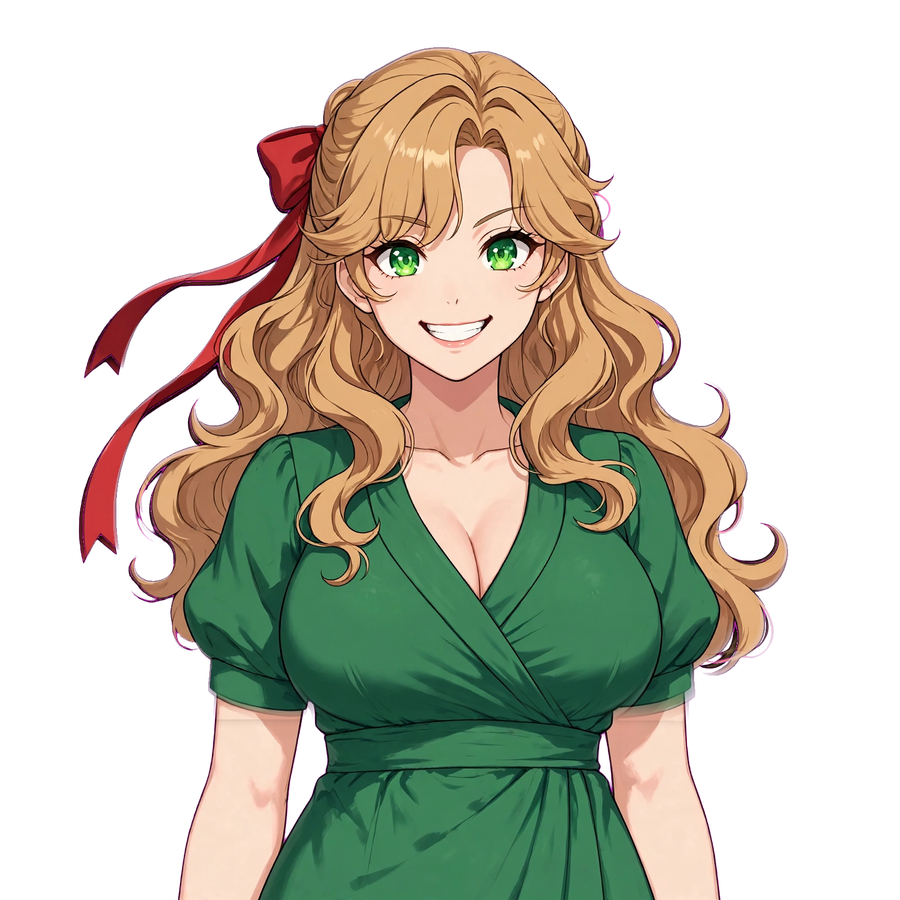
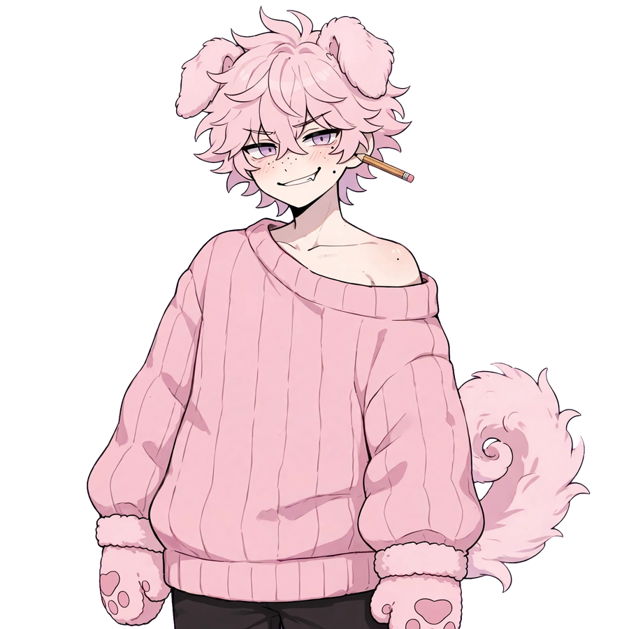
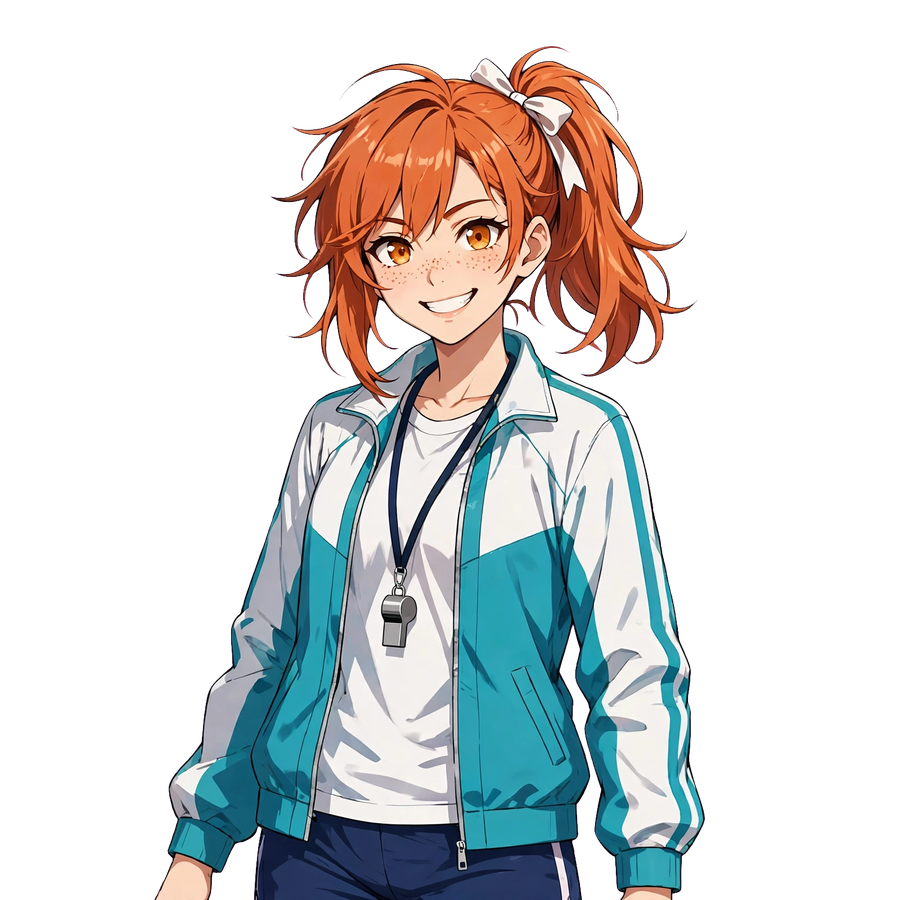
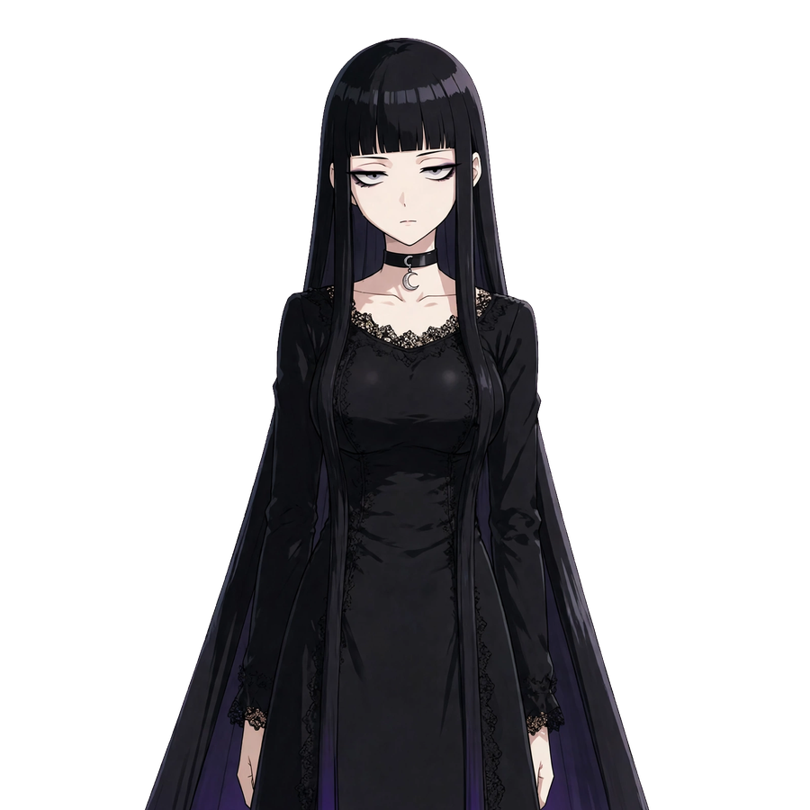
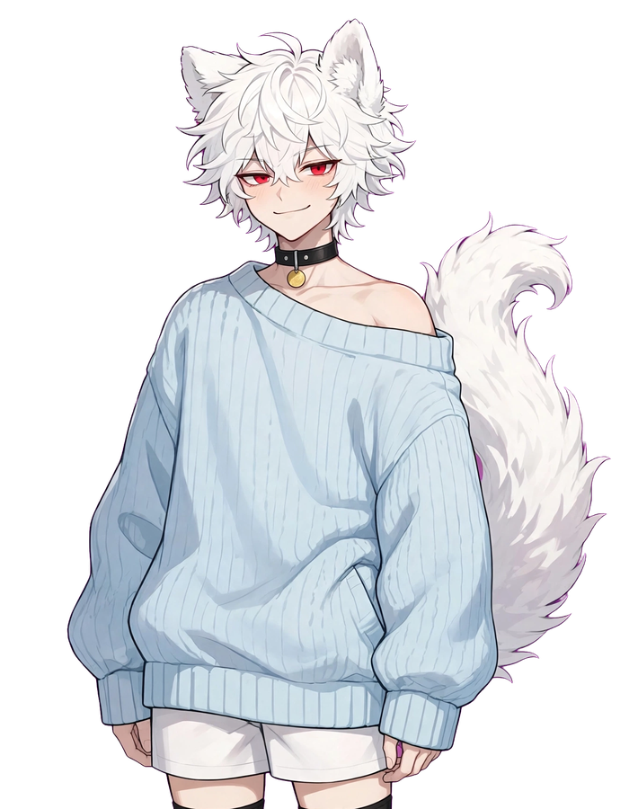

LIVE DEMO — RUNS IN YOUR BROWSER
A scripted taste of Presence. The real thing runs on your own Mac, offline, answering from your full library — this page answers from a handful of fixture lines.
Give her a moment — she's settling in.
ON SCREEN:
Paige

Clementine
Milo
Juno
Vesper
Mochi
Is this a mayfly?
What's the weather in Tokyo?
Hello — I'm back
Who else is in the cast?
Does she need the internet?
On screen: Paige — Atlas Presence's own lead, drawn for the cast and performed by our sprite + spring-physics stage (rigid layers, not a mesh rig — her hair rides real springs) · Voice: Piper (en_US-amy-medium), rendered locally · Answers: Presence Contract fixture set · Everything on this page runs locally in your browser — nothing is sent anywhere